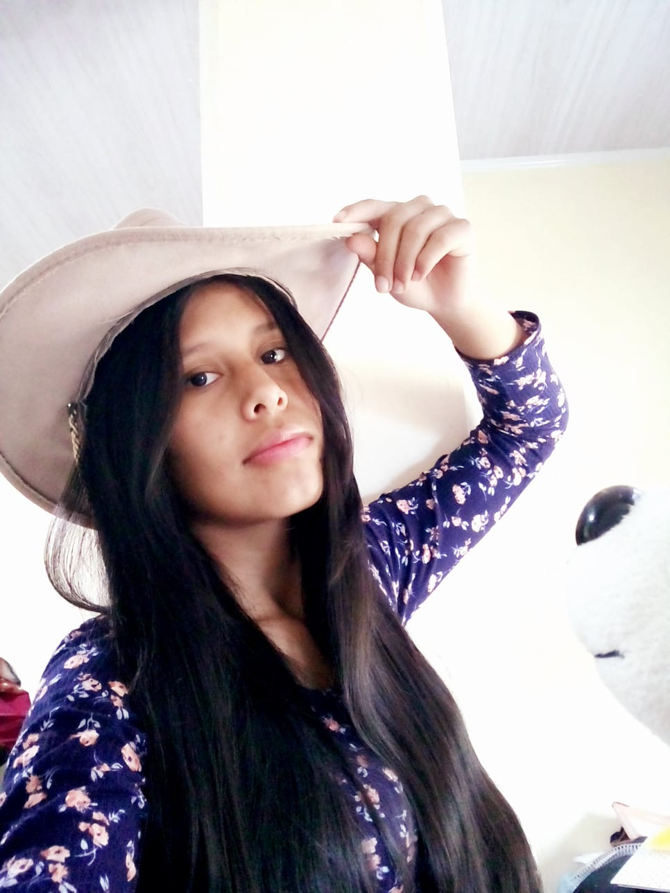

Me llamo Hassen Anabel Maraza Garcia, tengo 17 años y soy estudiante de la U.E. Eduardo Abaroa, estoy en mi sexto año de escolaridad. Soy la indicada para hacer esta pagina web, porque me gusta crear cosas útiles y atractivas. Además, tengo ganas de poner en práctica mis conocimientos y dedicar tiempo para que la página sea fácil de usar, organizada y agradable para quienes la visiten. También me motiva mejorar mis habilidades mientras desarrollo un proyecto de calidad.